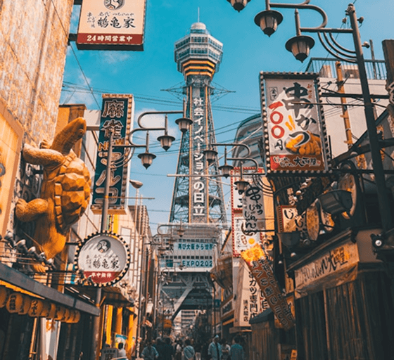
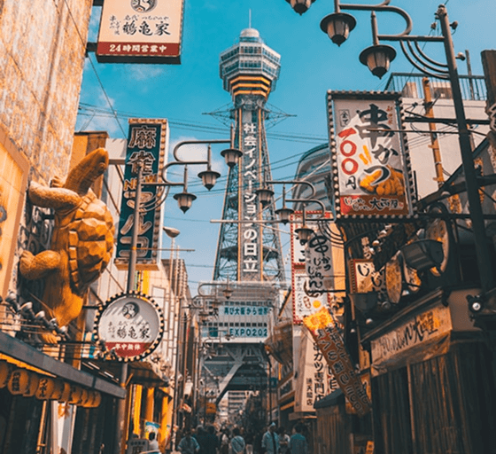

大阪
大阪，一座融合傳統與現代的城市，擁有豐富的歷史文化、熱鬧的購物街區與世界知名的美食天堂。從氣派的大阪城到霓虹閃爍的道頓堀，每一處都充滿驚喜。無論是第一次造訪，還是再次回味，大阪總能用它的熱情與魅力，讓你留下難忘回憶。

 

想怎麼玩大阪？熱門分類快速選

交通優惠
20+種選擇

一日遊
50+種選擇

景點門票
70+種選擇

美食餐廳
80+種選擇
大阪 TOP 10!
來自 ZOBAA 的大阪推薦
旅人攻略
看看大家怎麼玩！
這裡不只是遊記，更是來自旅人親身經歷的風格指南與靈感筆記。
跟著他們的腳步走，找到屬於你的旅行意義。

#大阪
#老街巡禮
空堀商店街的散步節奏
離開熱鬧難波，走進空堀這座時間凍結的老街，每家店都像一段回憶：木造喫茶、手工小物、安靜的巷弄轉角。這裡沒有觀光氣氛，只有城市最真實的日常樣貌...

#大阪
#庶民美食
深夜的章魚燒與便利商店啤酒
難波站邊的小巷，有開到凌晨的章魚燒老店。坐在路邊配一罐便利商店啤酒，看路人談天、喝醉、笑鬧，這種庶民感才是我最懷念的大阪味道。

#大阪
#靜態旅行
一個人在中之島圖書館待一整天
陰天的中之島很安靜，我選擇在百年圖書館裡消磨一整天。閱讀、打盹、寫明信片，從高聳書架與拱形窗邊找到片刻的呼吸空間。不趕行程的日子，才最像我想要的旅途。

#大阪
#在地文化
跟著在地人玩「新世界」
走進「新世界」，才發現大阪有多狂、有多生活。串炸店裡全是吆喝聲、立吞店排滿上班族，還有拍不完的霓虹與搞笑招牌。這一區又亂又熱鬧，但真實又迷人。